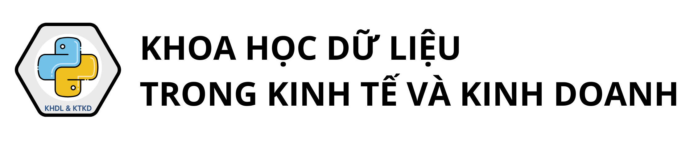
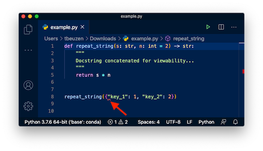
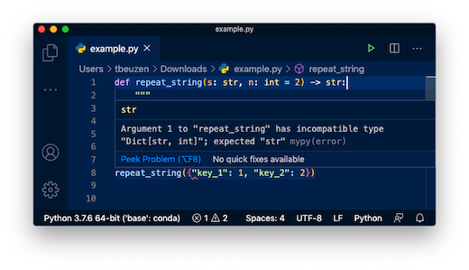

import sqlite3
import pandas as pd
# Kết nối tới file Chinook
conn = sqlite3.connect("data/Chinook_Sqlite.sqlite")
# Truy vấn SQL
query = "SELECT * FROM MediaType"
df = pd.read_sql_query(query, conn)
df
| MediaTypeId | Name | |
|---|---|---|
| 0 | 1 | MPEG audio file |
| 1 | 2 | Protected AAC audio file |
| 2 | 3 | Protected MPEG-4 video file |
| 3 | 4 | Purchased AAC audio file |
| 4 | 5 | AAC audio file |
from vnstock import Vnstock
stock = Vnstock().stock(symbol='VCB', source='VCI')
stock.quote.history(start='2020-01-01', end='2024-05-25')
👋 Chào mừng bạn đến với Vnstock!
Cảm ơn bạn đã sử dụng package phân tích chứng khoán #1 tại Việt Nam
Tài liệu: Sổ tay hướng dẫn
Cộng đồng: Nhóm Facebook
Khám phá các tính năng mới nhất và tham gia cộng đồng để nhận hỗ trợ.
Phiên bản Vnstock 3.3.0 đã có mặt, vui lòng cập nhật với câu lệnh : pip install vnstock --upgrade.
Lịch sử phiên bản: https://vnstocks.com/docs/tai-lieu/lich-su-phien-ban
Phiên bản hiện tại 3.2.6
Phiên bản Vnai 2.2.3 đã có mặt, vui lòng cập nhật với câu lệnh : pip install vnai --upgrade.
Lịch sử phiên bản: https://pypi.org/project/vnai/#history
Phiên bản hiện tại 2.0.4
| time | open | high | low | close | volume | |
|---|---|---|---|---|---|---|
| 0 | 2020-01-02 | 38.95 | 39.47 | 38.73 | 39.21 | 386290 |
| 1 | 2020-01-03 | 39.51 | 39.64 | 38.82 | 38.82 | 536130 |
| 2 | 2020-01-06 | 38.52 | 38.65 | 37.78 | 37.78 | 880110 |
| 3 | 2020-01-07 | 37.57 | 37.95 | 36.87 | 37.91 | 1013270 |
| 4 | 2020-01-08 | 37.52 | 37.95 | 37.22 | 37.57 | 722280 |
| ... | ... | ... | ... | ... | ... | ... |
| 1090 | 2024-05-20 | 61.29 | 61.76 | 60.96 | 61.03 | 1045431 |
| 1091 | 2024-05-21 | 61.03 | 61.10 | 60.23 | 60.50 | 1488654 |
| 1092 | 2024-05-22 | 60.76 | 60.90 | 60.23 | 60.23 | 1349994 |
| 1093 | 2024-05-23 | 60.23 | 60.76 | 60.10 | 60.43 | 1318403 |
| 1094 | 2024-05-24 | 60.43 | 60.43 | 59.77 | 59.90 | 2243441 |
1095 rows × 6 columns
company = Vnstock().stock(symbol='ACB', source='VCI').company
company.overview()
DataFrame.applymap has been deprecated. Use DataFrame.map instead.
| symbol | id | issue_share | history | company_profile | icb_name3 | icb_name2 | icb_name4 | financial_ratio_issue_share | charter_capital | |
|---|---|---|---|---|---|---|---|---|---|---|
| 0 | ACB | 67505 | 5136656599 | - Ngày 24/04/1993: Ngân hàng Thương mại Cổ ph... | Ngân hàng Thương mại Cổ phần Á Châu (ACB) được... | Ngân hàng | Ngân hàng | Ngân hàng | 5136656599 | 51366565990000 |
from vnstock.explorer.misc import *
# VCB exchange rate
vcb_exchange_rate(date='2025-06-16')
| currency_code | currency_name | buy _cash | buy _transfer | sell | date | |
|---|---|---|---|---|---|---|
| 2 | AUD | AUSTRALIAN DOLLAR | 16,484.97 | 16,651.48 | 17,184.95 | 2025-06-16 |
| 3 | CAD | CANADIAN DOLLAR | 18,712.40 | 18,901.41 | 19,506.96 | 2025-06-16 |
| 4 | CHF | SWISS FRANC | 31,311.71 | 31,627.99 | 32,641.27 | 2025-06-16 |
| 5 | CNY | CHINESE YUAN | 3,540.13 | 3,575.89 | 3,690.46 | 2025-06-16 |
| 6 | DKK | DANISH KRONE | - | 3,960.74 | 4,112.24 | 2025-06-16 |
| 7 | EUR | EURO | 29,322.99 | 29,619.19 | 30,869.27 | 2025-06-16 |
| 8 | GBP | UK POUND STERLING | 34,444.98 | 34,792.91 | 35,907.58 | 2025-06-16 |
| 9 | HKD | HONG KONG DOLLAR | 3,231.12 | 3,263.76 | 3,388.60 | 2025-06-16 |
| 10 | INR | INDIAN RUPEE | - | 301.46 | 314.44 | 2025-06-16 |
| 11 | JPY | JAPANESE YEN | 174.38 | 176.14 | 185.46 | 2025-06-16 |
| 12 | KRW | KOREAN WON | 16.56 | 18.40 | 19.96 | 2025-06-16 |
| 13 | KWD | KUWAITI DINAR | - | 84,832.46 | 88,484.33 | 2025-06-16 |
| 14 | MYR | MALAYSIAN RINGGIT | - | 6,084.30 | 6,216.74 | 2025-06-16 |
| 15 | NOK | NORWEGIAN KRONE | - | 2,579.69 | 2,689.10 | 2025-06-16 |
| 16 | RUB | RUSSIAN RUBLE | - | 311.64 | 344.98 | 2025-06-16 |
| 17 | SAR | SAUDI ARABIAN RIYAL | - | 6,914.53 | 7,212.19 | 2025-06-16 |
| 18 | SEK | SWEDISH KRONA | - | 2,687.87 | 2,801.87 | 2025-06-16 |
| 19 | SGD | SINGAPORE DOLLAR | 19,813.35 | 20,013.48 | 20,696.02 | 2025-06-16 |
| 20 | THB | THAI BAHT | 709.15 | 787.94 | 821.36 | 2025-06-16 |
| 21 | USD | US DOLLAR | 25,852.00 | 25,882.00 | 26,242.00 | 2025-06-16 |
Hàm range()#
Hàm range() được sử dụng để tạo một chuỗi số. Nó thường được sử dụng với vòng lặp for để lặp lại một số lần nhất định.
range(stop): Tạo một chuỗi số từ 0 đếnstop - 1.range(start, stop): Tạo một chuỗi số từstartđếnstop - 1.range(start, stop, step): Tạo một chuỗi số từstartđếnstop - 1với bước nhảystep.
# Lặp lại 5 lần (từ 0 đến 4)
for i in range(5):
print(i)
# Lặp từ 2 đến 5
for i in range(2, 6):
print(i)
# Lặp từ 0 đến 9 với bước nhảy 2
for i in range(0, 10, 2):
print(i)
0
1
2
3
4
2
3
4
5
0
2
4
6
8
Câu lệnh break và continue#
break: Dừng vòng lặp hiện tại.continue: Bỏ qua lần lặp hiện tại và chuyển sang lần lặp tiếp theo.
# Sử dụng break
for i in range(10):
if i == 5:
break
print(i) # Sẽ in từ 0 đến 4
# Sử dụng continue
for i in range(10):
if i % 2 == 0: # Bỏ qua số chẵn
continue
print(i) # Sẽ in số lẻ
0
1
2
3
4
1
3
5
7
9
Vòng lặp for lồng nhau#
Bạn có thể đặt một vòng lặp for bên trong một vòng lặp for khác.
for i in range(3):
for j in range(2):
print(f"i: {i}, j: {j}")
i: 0, j: 0
i: 0, j: 1
i: 1, j: 0
i: 1, j: 1
i: 2, j: 0
i: 2, j: 1
2. Vòng lặp while#
Vòng lặp while thực thi một khối mã miễn là một điều kiện nhất định là đúng.
Vòng lặp while cơ bản#
count = 0
while count < 5:
print(count)
count += 1
0
1
2
3
4
Vòng lặp vô hạn#
Một vòng lặp vô hạn xảy ra khi điều kiện của vòng lặp while luôn đúng. Cần cẩn thận để tránh chúng trừ khi bạn có một lý do cụ thể để sử dụng (ví dụ: một máy chủ đang lắng nghe các kết nối).
# Ví dụ về vòng lặp vô hạn (chạy đoạn mã này sẽ khiến chương trình không dừng)
# while True:
# print("Vòng lặp vô hạn")
# # Để dừng, bạn sẽ cần ngắt thủ công (ví dụ: Ctrl+C)
else với vòng lặp while#
Câu lệnh else trong vòng lặp while sẽ được thực thi khi điều kiện của vòng lặp while trở thành False. Nó KHÔNG được thực thi nếu vòng lặp bị dừng bởi một câu lệnh break.
count = 0
while count < 3:
print(f"Trong vòng lặp: {count}")
count += 1
else:
print("Vòng lặp hoàn tất")
# Ví dụ với break
count = 0
while count < 5:
if count == 2:
break
print(f"Trong vòng lặp (với break): {count}")
count += 1
else:
print("Vòng lặp hoàn tất (không được thực thi)")
Trong vòng lặp: 0
Trong vòng lặp: 1
Trong vòng lặp: 2
Vòng lặp hoàn tất
Trong vòng lặp (với break): 0
Trong vòng lặp (với break): 1
3. Biểu thức tập hợp (Comprehensions)#
Biểu thức tập hợp cung cấp một cách ngắn gọn để tạo danh sách, từ điển và tập hợp.
Biểu thức tập hợp danh sách#
# Tạo danh sách các số bình phương
squares = [x**2 for x in range(10)]
print(squares)
# Lọc danh sách
even_numbers = [x for x in range(10) if x % 2 == 0]
print(even_numbers)
[0, 1, 4, 9, 16, 25, 36, 49, 64, 81]
[0, 2, 4, 6, 8]
Biểu thức tập hợp từ điển#
# Tạo từ điển từ danh sách các cặp
my_dict = {x: x**2 for x in range(5)}
print(my_dict)
# Chuyển đổi danh sách các tuple thành từ điển
list_of_tuples = [('a', 1), ('b', 2)]
dict_from_tuples = {key: value for key, value in list_of_tuples}
print(dict_from_tuples)
{0: 0, 1: 1, 2: 4, 3: 9, 4: 16}
{'a': 1, 'b': 2}
Biểu thức tập hợp tập hợp#
# Tạo tập hợp các số bình phương duy nhất
unique_squares = {x**2 for x in [1, 2, 2, 3, 3, 3]}
print(unique_squares)
{1, 4, 9}
4. try / except#
Khối try / except được sử dụng để xử lý lỗi (ngoại lệ) trong Python. Nó cho phép bạn thử một khối mã và nếu một lỗi xảy ra, hãy thực hiện một hành động cụ thể thay vì làm hỏng chương trình.
Xử lý ngoại lệ cơ bản#
# Chia cho 0
try:
result = 10 / 0
except ZeroDivisionError:
print("Đã xảy ra lỗi chia cho 0!")
# Lỗi giá trị
try:
number = int("abc")
except ValueError:
print("Đã xảy ra lỗi giá trị không hợp lệ!")
# Xử lý ngoại lệ tổng quát
try:
my_list = [1, 2]
print(my_list[3])
except Exception as e:
print(f"Một lỗi không xác định đã xảy ra.")
Đã xảy ra lỗi chia cho 0!
Đã xảy ra lỗi giá trị không hợp lệ!
Một lỗi không xác định đã xảy ra.
else và finally#
else: Khối mã này được thực thi nếu khốitryKHÔNG gây ra bất kỳ ngoại lệ nào.finally: Khối mã này LUÔN được thực thi, bất kể có ngoại lệ nào xảy ra hay không. Nó thường được sử dụng cho các hoạt động dọn dẹp (ví dụ: đóng file).
# Ví dụ với else và finally
try:
result = 10 / 5
except ZeroDivisionError:
print("Đã xảy ra lỗi chia cho 0!")
else:
print(f"Kết quả là: {result}")
finally:
print("Khối finally đã được thực thi.")
print("\n---")
# Ví dụ với ngoại lệ và finally
try:
result = 10 / 0
except ZeroDivisionError:
print("Đã xảy ra lỗi chia cho 0!")
else:
print(f"Kết quả là: {result}") # Sẽ không được thực thi
finally:
print("Khối finally đã được thực thi.")
Kết quả là: 2.0
Khối finally đã được thực thi.
---
Đã xảy ra lỗi chia cho 0!
Khối finally đã được thực thi.
5. Hàm#
Hàm là một khối mã được tổ chức, có thể tái sử dụng, được sử dụng để thực hiện một hành động liên quan duy nhất. Hàm cung cấp khả năng mô đun hóa cao hơn cho ứng dụng của bạn và khả năng tái sử dụng mã.
Định nghĩa hàm#
Hàm được định nghĩa bằng từ khóa def.
# Hàm đơn giản không có tham số
def greet():
print("Hello!")
# Hàm với tham số
def greet_name(name):
print(f"Hello, {name}!")
# Hàm có giá trị trả về
def add_numbers(a, b):
return a + b
# Gọi hàm
greet_name("Alice")
greet_name("Bob")
sum_result = add_numbers(10, 5)
print(f"10 + 5 = {sum_result}")
Hello, Alice!
Hello, Bob!
10 + 5 = 15
Tham số và Đối số#
Tham số: Các tên được liệt kê bên trong dấu ngoặc đơn trong định nghĩa hàm.
Đối số: Các giá trị được truyền vào hàm khi nó được gọi.
Đối số mặc định#
Bạn có thể cung cấp các giá trị mặc định cho các tham số. Nếu một đối số không được cung cấp cho một tham số có giá trị mặc định, giá trị mặc định sẽ được sử dụng.
def greet_default(name="World"):
print(f"Hello, {name}!")
greet_default() # Sử dụng giá trị mặc định
greet_default("Python") # Ghi đè giá trị mặc định
Hello, World!
Hello, Python!
Đối số từ khóa#
Bạn có thể gọi hàm bằng cách sử dụng các đối số từ khóa, trong đó bạn chỉ định tên tham số khi truyền đối số. Điều này cho phép bạn truyền đối số theo bất kỳ thứ tự nào.
def print_info(name, age):
print(f"Name: {name}, Age: {age}")
print_info(name="Alice", age=30)
print_info(age=25, name="Bob") # Thứ tự không quan trọng với đối số từ khóa
Name: Alice, Age: 30
Name: Bob, Age: 25
Đối số tùy ý (*args và **kwargs)#
*args(non-keyword arguments): Cho phép một hàm chấp nhận một số lượng đối số không xác định dưới dạng một tuple.**kwargs(keyword arguments): Cho phép một hàm chấp nhận một số lượng đối số từ khóa không xác định dưới dạng một từ điển.
def func_with_args(*args):
print(f"Args: {args}")
func_with_args(1, 2, 3)
func_with_args('apple', 'banana', 'cherry')
def func_with_kwargs(**kwargs):
print(f"Kwargs: {kwargs}")
func_with_kwargs(name="Alice", age=30)
func_with_kwargs(city="New York", zip="10001")
Args: (1, 2, 3)
Args: ('apple', 'banana', 'cherry')
Kwargs: {'name': 'Alice', 'age': 30}
Kwargs: {'city': 'New York', 'zip': '10001'}
Kiểu dữ liệu trả về#
Hàm có thể trả về một giá trị bằng cách sử dụng câu lệnh return.
def calculate_sum(a, b):
return a + b
total = calculate_sum(7, 8)
print(f"Tổng là: {total}")
def get_greeting(name):
return f"Hello, {name}!"
message = get_greeting("John")
print(message)
Tổng là: 15
Hello, John!
6. Hàm như một kiểu dữ liệu#
Trong Python, hàm là các đối tượng “first-class citizens”, có nghĩa là chúng có thể được xử lý giống như bất kỳ kiểu dữ liệu nào khác (ví dụ: số nguyên, chuỗi ký tự, danh sách). Điều này mở ra nhiều khả năng mạnh mẽ.
Gán hàm cho biến#
Bạn có thể gán một hàm cho một biến và sau đó gọi hàm thông qua biến đó.
def func1():
print("Hello from func1!")
my_func = func1
my_func() # Gọi hàm thông qua biến
func1() # Gọi hàm gốc
Hello from func1!
Hello from func1!
Truyền hàm làm đối số#
Hàm có thể được truyền làm đối số cho các hàm khác. Đây là một khái niệm cơ bản trong lập trình hàm và tạo ra các hàm bậc cao (higher-order functions).
def add(x, y):
return x + y
def subtract(x, y):
return x - y
def perform_operation(operation, a, b):
result = operation(a, b)
print(f"Thực hiện hoạt động {operation.__name__}: {result}")
perform_operation(add, 2, 3)
perform_operation(subtract, 2, 3)
Thực hiện hoạt động add: 5
Thực hiện hoạt động subtract: -1
Trả về hàm từ một hàm khác#
Một hàm có thể trả về một hàm khác. Điều này thường được sử dụng trong các closure và decorator.
def create_greeter(greeting):
def greeter(name):
return f"{greeting}, {name}!"
return greeter
say_hello = create_greeter("Hello")
say_hi = create_greeter("Hi")
print(say_hello("Alice"))
print(say_hello("Bob"))
Hello, Alice!
Hello, Bob!
Gợi ý kiểu dữ liệu (Type Hinting)#
Gợi ý kiểu dữ liệu là một tính năng trong Python cho phép bạn chỉ định kiểu dữ liệu mong muốn cho các biến, tham số hàm và giá trị trả về. Mặc dù Python vẫn là một ngôn ngữ được gõ động (dynamically typed), gợi ý kiểu dữ liệu cải thiện khả năng đọc, bảo trì và cho phép các công cụ phân tích tĩnh bắt lỗi trước khi chạy mã.
def add_numbers_with_hint(a: int, b: int) -> int:
"""Cộng hai số nguyên và trả về tổng của chúng."""
return a + b
result = add_numbers_with_hint(2, 3)
print(f"Kết quả là: {result}")
Kết quả là: 5
Tại sao nên sử dụng gợi ý kiểu dữ liệu?#
Cải thiện khả năng đọc: Giúp các nhà phát triển khác (và chính bạn trong tương lai) hiểu rõ hơn về các kiểu dữ liệu dự kiến của đầu vào và đầu ra của hàm.
Phát hiện lỗi sớm: Các công cụ phân tích tĩnh (như MyPy, Pyright) và IDE có thể sử dụng gợi ý kiểu dữ liệu để bắt các lỗi liên quan đến kiểu dữ liệu trước khi bạn chạy mã.
Tự động hoàn thành tốt hơn: Các IDE có thể cung cấp gợi ý tự động hoàn thành chính xác hơn dựa trên kiểu dữ liệu đã biết.
Tài liệu: Gợi ý kiểu dữ liệu đóng vai trò như một dạng tài liệu cho API của bạn.
Ví dụ nâng cao về gợi ý kiểu dữ liệu#
from typing import List, Dict, Tuple, Union, Optional
def process_list(data: List[int]) -> int:
"""Tính tổng các phần tử trong danh sách các số nguyên."""
return sum(data)
my_numbers: List[int] = [1, 2, 3]
print(f"Tổng các số: {process_list(my_numbers)}")
def get_user_info(user_id: int) -> Optional[Dict[str, Union[str, int]]]:
"""Truy xuất thông tin người dùng theo ID.
Trả về một từ điển hoặc None nếu không tìm thấy người dùng.
"""
if user_id == 1:
return {"name": "Alice", "age": 30}
return None
user_data = get_user_info(1)
if user_data:
print(f"Tên người dùng: {user_data['name']}")
def repeat_string(s: str, times: int = 1) -> str:
"""Lặp lại một chuỗi một số lần nhất định."""
return s * times
print(repeat_string("abc", 3))
def describe_tuple(tup: Tuple[str, int, float]) -> str:
"""Mô tả một tuple với các kiểu dữ liệu cụ thể."""
return f"String: {tup[0]}, Integer: {tup[1]}, Float: {tup[2]}"
my_tuple = ("hello", 123, 4.56)
print(describe_tuple(my_tuple))
def check_length(items: List[Union[str, int]]) -> int:
"""Trả về độ dài của danh sách chứa chuỗi hoặc số nguyên."""
return len(items)
mixed_list = ["apple", 1, "banana", 2]
print(f"Độ dài danh sách: {check_length(mixed_list)}")
Tổng các số: 6
Tên người dùng: Alice
abcabcabc
String: hello, Integer: 123, Float: 4.56
Độ dài danh sách: 4
repeat_string({'key_1': 1, 'key_2': 2})
---------------------------------------------------------------------------
TypeError Traceback (most recent call last)
Cell In[28], line 1
----> 1 repeat_string({'key_1': 1, 'key_2': 2})
Cell In[27], line 24, in repeat_string(s, times)
22 def repeat_string(s: str, times: int = 1) -> str:
23 """Lặp lại một chuỗi một số lần nhất định."""
---> 24 return s * times
TypeError: unsupported operand type(s) for *: 'dict' and 'int'
Hầu hết các IDE đều đủ thông minh để đọc gợi ý kiểu dữ liệu của bạn và cảnh báo nếu bạn đang sử dụng một kiểu dữ liệu khác trong hàm, ví dụ, ảnh chụp màn hình VScode này:

